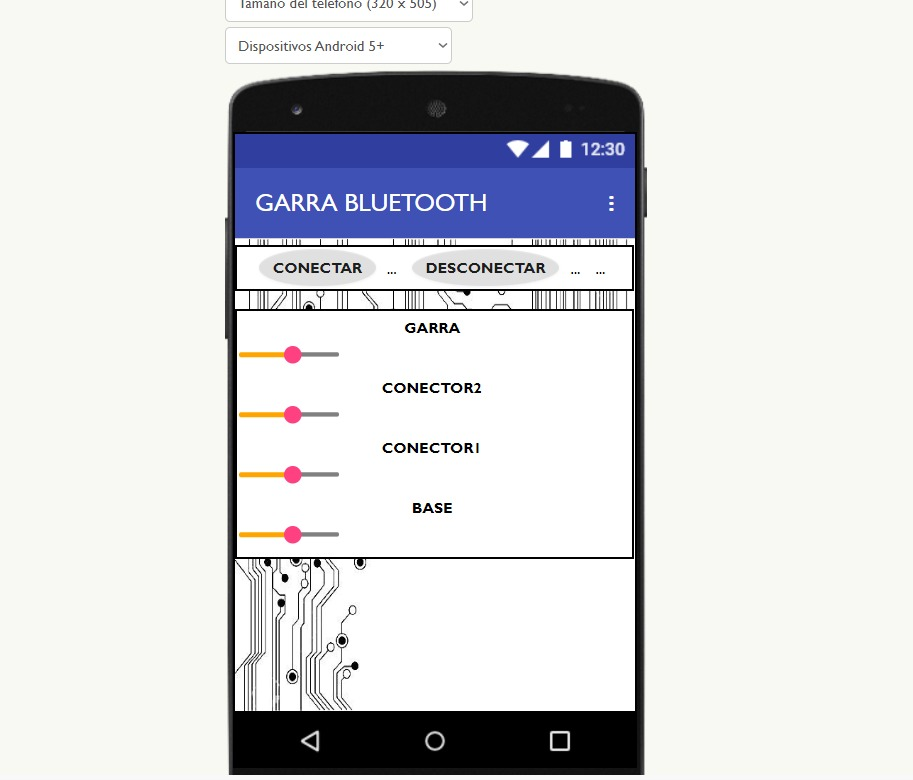

Un brazo robótico es un dispositivo mecánico diseñado para imitar y replicar los movimientos del brazo humano, proporcionando una solución funcional, precisa y adaptable para una amplia gama de aplicaciones. Estos dispositivos se utilizan en sectores tan diversos como la industria, la medicina, la investigación y la educación, gracias a su versatilidad y capacidad para realizar tareas que van desde ensamblajes complejos hasta procedimientos quirúrgicos delicados.
El modelo en cuestión cuenta con un sistema de control avanzado mediante tecnología Bluetooth, lo que permite operarlo de forma inalámbrica a través de un teléfono móvil, una tableta o una computadora. Esta característica aporta no solo comodidad al usuario, sino también mayor flexibilidad en su manejo, ya que elimina la necesidad de conexiones físicas directas. Esto significa que el operador puede controlar el brazo desde una distancia segura o desde ubicaciones remotas, dependiendo de la configuración.
Además, la conectividad Bluetooth facilita la integración con aplicaciones y software personalizados, lo que amplía significativamente las posibilidades de uso. Por ejemplo, se puede programar para realizar tareas repetitivas, sincronizarse con sensores externos o responder a comandos en tiempo real. Esta capacidad de adaptarse a diferentes entornos y necesidades convierte al brazo robótico en una herramienta esencial para la automatización, el aprendizaje interactivo y la asistencia técnica, ofreciendo soluciones innovadoras y eficientes para el mundo moderno.
- Materiales -
--Arduino
--jumpers
--4 servomotores
--4 velocimetros
--modelo de brazo
--HC-C5 Bluetooth
Simulación
En el proyecto del brazo robótico, se realizó una mejora significativa al integrar botones adicionales en una aplicación desarrollada con App Inventor. Esta actualización no solo amplió las funcionalidades del sistema, sino que también optimizó la experiencia del usuario, al permitir un control más intuitivo y accesible del dispositivo. La aplicación utiliza tecnología Bluetooth para establecer una conexión inalámbrica con el brazo robótico, eliminando la necesidad de cables y ofreciendo una operación más flexible y moderna.

La incorporación de botones adicionales permite realizar acciones específicas de forma directa y precisa, lo que resulta en una interacción más fluida y adaptada a las necesidades del usuario. Por ejemplo, ahora es posible programar y ejecutar movimientos personalizados, ajustar la velocidad o realizar configuraciones avanzadas con solo un toque en la pantalla del dispositivo móvil.
Gracias a estas mejoras, la aplicación no solo facilita el uso del brazo robótico, sino que también lo convierte en una herramienta más versátil. Esta funcionalidad es especialmente valiosa en entornos educativos, donde los estudiantes pueden experimentar con conceptos de programación y robótica de una manera práctica y accesible. Asimismo, en contextos recreativos, los usuarios pueden explorar su creatividad al personalizar y programar movimientos complejos, fomentando el interés por la tecnología y la innovación. Con estas características, la solución ofrece una plataforma sólida y dinámica para el aprendizaje, la experimentación y el entretenimiento.
- Resultados -
El resultado fue realmente positivo al agregarle la tecnología Bluetooth. Fue un proceso sencillo y directo que permitió una mejor conectividad y funcionalidad. Al incorporar el Bluetooth, no solo mejoró la facilidad de uso, sino también la capacidad de interacción con otros dispositivos, lo que llevó a una experiencia mucho más completa. El éxito de este ajuste fue notable y mostró que la integración de nuevas tecnologías puede ser una solución eficaz y de bajo costo para mejorar el desempeño de un proyecto.